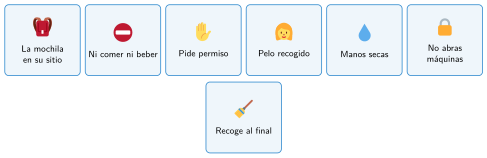
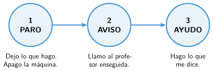

Normas de seguridad del taller
🤔 Pienso5 min
Qué hago aquí: Piensa un momento y contesta con lo que ya sabes. No pasa nada si no lo sabes: es para empezar.
Lee la historia. Subraya lo que te parezca peligroso.
Lucía deja la mochila en el pasillo, entre dos mesas. Su compañero come un bocadillo junto a la impresora 3D. Mario abre la tapa de la máquina láser para ver mejor.
📖 Leo y aprendo15 min
Qué hago aquí: Lee despacio, mira los dibujos y los ejemplos, y quédate con la idea clave del final.
Un taller es un lugar para crear. Pero también tiene peligros: electricidad, piezas calientes, herramientas que cortan y máquinas que se mueven.
Por eso hay normas de seguridad. Una norma es una regla que todos cumplimos para que nadie se haga daño.
Las normas, de un vistazo:

Si hay un accidente, sigue siempre tres pasos:

Los tres pasos también se pueden escribir como un programa de bloques. Léelo de arriba abajo:
✏️ Hago25 min
Qué hago aquí: Haz las actividades en orden. Empieza siempre por las básicas.
Vuelve a la historia del principio. Escribe los tres peligros que has encontrado.
Une cada peligro con la norma que lo evita.
| La mochila en el pasillo | • • | No comer ni beber |
| El bocadillo junto a la impresora | • • | No abrir una máquina en marcha |
| Abrir la tapa del láser | • • | La mochila, en su sitio |
Ordena los pasos ante un accidente. Escribe 1, 2 y 3.
Aviso al profesor. Ayudo como me dice. Paro lo que hago.
¿Por qué no se puede comer ni beber en el taller?
✏️ Puedes responder escribiendo, con un dibujo o un esquema, o contándolo en voz alta.
En grupo, elegid las tres normas más importantes para vuestro taller. Explicad por qué.
✏️ Puedes responder escribiendo, con un dibujo o un esquema, o contándolo en voz alta.
🚀 Amplío (si quieres saber más)
Qué hago aquí: ¿Has terminado? Lee la curiosidad o elige el reto. Es voluntario.
Diseña un cartel para la puerta del taller con cinco normas. Usa pocas palabras y dibujos.
✅ Compruebo5 min
Qué hago aquí: Contesta sin mirar la ficha y marca cómo lo llevas.